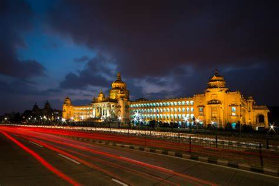

working on images and links for session 6!
my favourite place
below are my favourite places that i have tavelled or want to go to
Mombasais a coastal city in southeastern Kenya along the Indian Ocean. It was the first capital of British
East Africa, before Nairobi was elevated to capital status in 1907. It now serves as the capital of Mombasa County.
The town is known as "the white and blue city" in Kenya.
It is the country's oldest (c. 900 A.D.) and second-largest city[3] after Nairobi, with a population of about 1,208,333 people according to the 2019 census.[1]

 width="1200" height="700"title="Mombasa">
width="1200" height="700"title="Mombasa">
New yorkNew York, often called New York City[b] or NYC, is the most populous city in the United States, located at
the southern tip of New York State on one of the world's largest natural harbors.
The city comprises five boroughs, each coextensive with a respective county. The city is the geographical and
demographic center of both the Northeast megalopolis and the New York metropolitan area, the largest metropolitan
area in the United States by both population and urban area.
 width="1200" height="700"title="new york">
width="1200" height="700"title="new york">
Paris is the capital and largest city of France. With an estimated population of 2,102,650 residents in
January 2023[2] in an area of more than 105 km2 (41 sq mi),[5] Paris is the fourth-most populous city in the
European Union, the ninth-most populous city in Europe and the 30th most densely populated city in the world
in 2022.
 width="1200" height="700"title="Paris">
width="1200" height="700"title="Paris">
Bengaluru formerly called Bangalore, is the capital and largest city of the southern Indian state of
Karnataka. As per the 2011 census, the city had a population of more than 8.4 million, making it the third most
populous city in India and the most populous in South India.

width="1200" height="700"title="Bengaluru">